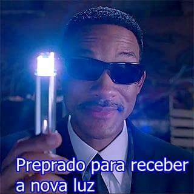

“Mas a vereda dos justos é como a brilhante luz da manhã, Que clareia mais e mais até a plena luz do dia.” Provérbios 4:18
As Testemunhas de Jeová afirmam ser o único grupo para quem Jeová revela a verdade. Neste caso, porque eles fazem constantes mudanças nas doutrinas? Será que a verdade muda mesmo? Um ponto importante enfatizado por este site é que doutrinas e predições erradas são uma indicação clara de que Jeová não orienta a Organização das Testemunhas de Jeová. Para o observador externo, esta é a conclusão lógica. Mas para as Testemunhas de Jeová, não há problema algum. Porque? Porque na mente das Testemunhas de Jeová, as mudanças e erros são imediatamente justificados com o seguinte conceito:
- A Bíblia nos diz que luz ficaria mais clara.
Para que o restante do conteúdo deste site surta algum efeito, é essencial entender a falha na lógica dessa afirmação.
A principal justificativa da Organização para explicar as doutrinas alteradas é Provérbios 4:18:
*** w11 15/5 p. 27 Sigamos a Cristo, o Líder perfeito ***
“A vereda dos justos é como a luz clara que clareia mais e mais até o dia estar firmemente estabelecido”, diz Provérbios 4:18. Sim, a liderança de Jesus é progressiva, não estagnada. Outra maneira de cooperar com os “irmãos” de Cristo é ser receptivo aos refinamentos no nosso entendimento das verdades bíblicas publicados pelo “escravo fiel e discreto”.
*** w01 15/1 p. 18 par. 8 Acompanhe o passo da organização de Jeová ***
Referente ao esclarecimento espiritual progressivo, Provérbios 4:18 mostrou-se veraz. O texto diz: “A vereda dos justos é como a luz clara que clareia mais e mais até o dia estar firmemente estabelecido.” Como somos gratos por termos recebido esclarecimento espiritual progressivo!
*** w95 15/5 p. 15 par. 1 Lampejos de luz, grandes e pequenos (Parte um) ***
UMA prova da sabedoria divina, de acordo com Provérbios 4:18, é que a revelação de verdades espirituais tem ocorrido gradualmente, por meio de lampejos de luz. No artigo precedente, vimos como este texto se cumpriu no tempo dos apóstolos. Um grande conjunto de verdades bíblicas revelado de uma só vez tanto ofuscaria como confundiria — semelhante ao efeito de se sair do escuro para a luz brilhante do sol. Além disso, a verdade revelada gradualmente fortalece a fé dos cristãos de forma contínua. Torna mais brilhante sua esperança e mais claro o caminho que devem seguir.
A organização das Testemunhas de Jeová interpreta a palavra “luz”, em Provérbios 4, como se fosse “entendimento doutrinal” da organização, mas isso não passa de uma desculpa para justificar seus erros anteriores. Precisamos considerar os seguintes aspectos:
- Qual o significado real de Provérbios 4:18?
- A doutrina das Testemunhas de Jeová está ‘clareando mais e mais’?
- Será que Jeová orientaria uma religião a promover falsidades?
Provérbios 4:18
Durante milhares de anos, as pessoas entendiam que Provérbios capítulo 4 falava de comportamento, o que se percebe facilmente quando se lê o capítulo inteiro no contexto. Os versículos ao redor do 18 dizem o seguinte:
“… Pois eles não conseguem dormir enquanto não fazem o que é mau… O caminho dos maus é como a escuridão; Eles nem sabem o que os faz tropeçar… Escutem, meus filhos, a disciplina de um pai; … Guarde os meus mandamentos … Proteja, acima de tudo, o seu coração…”
Escritores cristãos explicam:
“O que fica claro, de Provérbios, é que o leitor pode escolher ou a sabedoria ou viver uma vida de insensatez. (Prov 4:14-19)”
(Fonte: thisischurch.com/christianinfo/proverbs.htm , 25 Mar de 2005, tradução minha)
Provérbios 4:18 não tinha a intenção de profetizar que Deus revelaria a verdade gradualmente para a Organização das Testemunhas de Jeová. Em vez de pegar um versículo isolado, se observarmos o contexto do capítulo 4 inteiro de Provérbios, veremos que trata-se de uma comparação do comportamento de pessoas boas e pessoas más, e não tem relação alguma com o fornecimento de verdades doutrinais por meio de uma organização. Desde o início do capítulo, pode-se notar que não existe fundamento algum pra justificar erros e alterações doutrinais usando esse texto bíblico.
Mais clara? Ou diferente?
Frequentemente, a luz das Testemunhas de Jeová não fica mais clara, só muito diferente!
Provérbios 4 diz que pessoas justas são muito melhores do que as iníquas, mas não faz profecia sobre a Organização das Testemunhas de Jeová. No entanto, vamos imaginar que, nessa passagem bíblica, há um prenúncio profético de que Deus revelaria sua verdade progressivamente para seu povo durante o tempo do fim. Mesmo nessa hipótese, o texto não poderia ser aplicado à história da Organização, porque a doutrina das Testemunhas de Jeová não foi refinada, mas alterada. Veja o exemplo a seguir, e analise se luz só ficou mais clara:
Imagine que você é Testemunha de Jeová, pai de um filho que precisa de transplante de rim em 1970. Embora a Despertai! de 22 de Dezembro de 1949 tenha descrito os transplantes como “maravilhas da cirurgia moderna” (em inglês, tradução minha), em 1967 Deus revelou que os transplantes são errados aos seus olhos. A Sentinela de 15 de Novembro de 1967, páginas 702-704, afirmaram que, por estarem agora “esclarecidos pela palavra de Deus”, o povo de Deus entendeu que os transplantes são contra os princípios divinos e são uma forma de canibalismo. Os pais devem ter acreditado sinceramente que estavam colocando Jeová em primeiro lugar, enquanto assistiam seus filhos morrerem, recusando o transplante e a possibilidade deles viverem. Como esse pai se sentiria ao ler A Sentinela de 1 de Setembro de 1980, copiada abaixo?
*** w80 1/9 p. 31 Perguntas dos Leitores ***
Não há nenhuma ordem bíblica que proíba especificamente receber outros tecidos humanos. … É um assunto para decisão pessoal.
O esclarecimento de 1967 mostrou-se sombrio, prejudicial e precisou de correção posterior. Foi, na verdade, um retrocesso na doutrina que resultou em mortes desnecessárias de Testemunhas de Jeová. Quando uma doutrina muda, e depois volta à posição original, isso não é evidência de ‘luz clareando mais e mais’; é evidência de que o Espírito Santo não orienta o Corpo Governante.
Russell eloquentemente escreveu o seguinte absurdo:
*** Torre de Vigia de Sião (Zions’s Watchtower), Fevereiro de 1881, p. 3188 (em inglês, tradução minha) ***
Se estivéssemos seguindo um homem, então tudo seria diferente; sem dúvida, uma ideia humana seria contraditória a outra, e o que era luz há 1, 2 ou 6 meses, agora seria considerado escuridão; … Mas com Deus não há variação, nem sombra de mudança, e o mesmo acontece com a verdade; qualquer luz ou conhecimento vindo de Deus deve ser igual ao seu autor. Novas maneiras de ver a verdade não podem, jamais, contradizer uma verdade anterior. A “nova luz” nunca extingue a “luz” anterior, mas soma-se a ela.
O conceito de uma luz ficando mais e mais clara implica que a doutrina anterior estava correta, mas incompleta. A Organização das Testemunhas de Jeová fez inúmeras alterações doutrinais que foram, depois, descartadas como incorretas. Em outras ocasiões, ficaram indo e voltando na mesma decisão várias vezes, e todas as vezes contradizendo totalmente a “verdade” anterior.
Muitas vezes, ocorrem eclipses de “verdades”: a nova doutrina oculta a doutrina anterior. Por exemplo, não houve clareamento nas seguintes ocasiões:
- Em 1950, adorar a Jesus passou a ser errado; era uma doutrina fundamental que agora é errada.
- Quando as profecias de data falharam;
- Quando as pirâmides profetizaram o ano de 1914;
- Quando as autoridades superiores eram governos, depois Deus, depois governos de novo;
- Nas inúmeras mudanças no significado da geração que não passaria.
Os exemplos acima não foram clareamentos. Foram ensinos errados. Quantos ensinos errados Deus permitiu entrar no cânon da Bíblia? Agora compare esse número com a quantidade de ensinos errados nas publicações da organização das Testemunhas de Jeová em menos de 150 anos. O retorno contínuo a doutrinas antigas só indica que Deus não está envolvido nesses lampejos de luz que viram erros depois. Ainda assim, a liderança da organização afirma que essas mudanças vêm de Jeová e não devem ser questionadas.
*** w11 15/9 p. 14 ***
Como você reage quando Jeová, a Fonte de esclarecimento espiritual, lança luz sobre “as coisas profundas de Deus” contidas na Bíblia? (1 Cor. 2:10-13) Temos um belo exemplo na reação do apóstolo Pedro quando Jesus disse aos seus ouvintes: “A menos que comais a carne do Filho do homem e bebais o seu sangue, não tendes vida em vós mesmos.” Levando essas palavras ao pé da letra, muitos discípulos disseram: “Esta palavra é chocante; quem pode escutar isso?” Eles “foram embora para as coisas deixadas atrás”. Mas Pedro disse: “Senhor, para quem havemos de ir? Tu tens declarações de vida eterna.” — João 6:53, 60, 66, 68. O apóstolo Pedro não havia entendido bem o que Jesus quis dizer quando falou em comer Sua carne e beber Seu sangue. Mas Pedro confiou que Deus proveria o esclarecimento espiritual. Quando a luz espiritual sobre certo assunto se torna mais clara, você procura entender as razões bíblicas por trás do ajuste? (Pro. 4:18)
*** w82 1/8 p. 31 par. 19 A vereda dos justos realmente clareia mais e mais ***
Naturalmente, o desenvolvimento do entendimento, envolvendo “bordejar”, por assim dizer, muitas vezes serviu de prova de lealdade para os associados com o “escravo fiel e discreto”. Mas há contínuo progresso em direção a uma avaliação mais plena das “boas novas” e de tudo o que significam. Os que se mantiveram achegados à organização de Deus têm visto que as questões e as coisas difíceis de entender sempre são esclarecidas com o passar do tempo. E ao passo que a luz brilha cada vez mais, quão animador e satisfatório se torna o caminho!
Quando é verdade?
Esse conceito é aplicado por muitas religiões similares às Testemunhas de Jeová, como os Cristadelfianos e a Igreja de Deus. Ambos têm estrutura doutrinal quase idêntica à das Testemunhas de Jeová. Também é aplicado pelos Adventistas do Sétimo Dia, que começaram junto com as Testemunhas de Jeová, partindo dos mesmos ensinos básicos de Miller. Os Adventistas do Sétimo dia pregam e crescem na mesma velocidade. Qualquer pessoa criada nessas religiões fica igualmente convencida de que “a luz bilha mais e mais” para esclarecer ensinos errados em suas religiões.
A Igreja de Deus usa o mesmo raciocínio das “novas luzes”, como se nota na experiência de um membro minha de ex-adventistas ex-sda.com (2 de maio de 2006), em inglês, tradução minha:
“O Sr. Herbert W. Armstrong ainda usou de uma abordagem não muito sincera. Ele chamou a alteração sobre Divórcio e Re-casamento de “nova luz”, “nova verdade” que Deus havia (finalmente) nos mostrado. Em outras palavras, ele subitamente colocou a culpa pelo erro doutrinal em Deus.”
Os Mórmons fazem a mesma coisa. Em uma experiência, publicada na revista A Sentinela, de um Mórmon que se converteu em Testemunha de Jeová, é irônico ver uma das suas razões:
*** w13 1/2 p.9 ***
Pesquisei mais a fundo os ensinamentos mórmons. Também consultei líderes da Igreja Mórmon, que me disseram que as respostas para minhas perguntas envolviam mistérios ainda não solucionados. [Nota minha: na edição em inglês desse artigo, o texto diz (tradução minha): “minhas perguntas envolviam mistérios que seriam resolvidos um dia à medida que a luz ficasse mais clara” (veja em inglês no jw.org)].
O artigo de Despertai! a seguir, sobre a Igreja Católica, é igualmente aplicável às Testemunhas de Jeová:
*** g70 8/10 p. 8 Mudanças que perturbam as pessoas ***
“Diga-me”, perguntou, “como posso ter confiança em algo? Como posso crer na Bíblia, ou em Deus, ou ter fé? Apenas há dez anos atrás, nós, católicos, possuíamos a verdade absoluta, tínhamos toda a nossa fé nisso. Agora o papa e nossos sacerdotes nos dizem que esta não é mais a forma de se crer, mas que temos de crer em ‘coisas novas’. Como vou saber se as ‘coisas novas’ serão a verdade daqui a cinco anos?”
Ironicamente, a fonte de toda “nova luz” é apostasia. Alguém – seja um membro do Corpo Governante, alguém da comissão de escrita, ou uma pergunta dos leitores – discorda da verdade das Testemunhas de Jeová e apresenta um ponto de vista alternativo. Muitas vezes, o ponto de vista alternativo não é aceito, e quem o propôs pode até ser taxado de apóstata. Ainda assim, o que começa como ideia apóstata torna-se a doutrina oficial, e recebe o nome de “nova luz”. A conclusão a que chegamos é que o ensino anterior era falso, ou que o novo ensino também pode ser falso, mas de um jeito ou de outro, as Testemunhas de Jeová estão ensinando apostasia.
Porque tanto tempo?
Você deve se perguntar: se Jeová quer que sua organização seja purificada em comparação a todas as outras religiões, então porque ele demorou tanto tempo para revelar verdades importantes? As Testemunhas de Jeová têm muito orgulho de sua luz espiritual.
*** w06 15/2 p. 26 par. 2 Continue a andar na vereda de luz crescente ***
Jeová é também a Fonte de luz espiritual. (Salmo 43:3) Ao passo que o mundo permanece em densas trevas, o Deus verdadeiro continua a lançar luz sobre seu povo… A luz crescente da parte de Jeová continua a iluminar a vereda de seu povo. Ela o refina em sentido organizacional, doutrinal e moral.
O artigo acima é muito revelador, mas não pelo que está escrito, e sim pelo que não está escrito. Por exemplo, embora ele afirme que o entendimento das Autoridades Superiores foi revelado corretamente em 1962, ele não afirma que esse novo entendimento é um retorno ao entendimento originalmente correto, que havia sido incorretamente mudado por Rutherford em 1929.
Embora o artigo diga que a doutrina de 1945 contra transfusões de sangue pode ser atribuída ao uso de sangue na Segunda Guerra Mundial, ele não fala o tempo que foi necessário para se chegar a essa doutrina. Visto que a técnica moderna de transfusões foi dominada em 1916, porque então eles esperaram até 1945 para proibir as transfusões de sangue? Se qualquer uso do sangue é errado, por que esperar até 1927 para orientar seu povo a não comê-lo? Gastaram mais de 50 anos desde que A Sentinela começou a ser impressa.
Fumar tornou-se um pecado que pode levar à desassociação em 1973. Mas fumar sempre foi prejudicial à saúde. “Grupos foram formados para desencorajar o fumo” desde o início dos anos 19001 e os cientistas provaram a conexão com câncer de pulmão na década de 19302. Além disso, disseram que fumar era errado porque estava relacionado ao espiritismo,3 mas se isso fosse verdade, deveria ter sido considerado errado desde o início da religião, e Deus não teria esperado 100 anos para fornecer tão importante “esclarecimento”.
Ainda mais importante: se for verdade que só o Corpo Governante forma o Escravo Fiel e Discreto, porque esperar até 2012 para revelar esta verdade? Antes de 2012, dizia-se que Jeová fornecia verdade através da classe do Escravo desde o tempo de Jesus, classe esta que era composta pelo grupo inteiro dos 144 mil ungidos. Depois de 2012, o entendimento passou a ser de que só o Corpo Governante de 1919 até hoje é que compõe o Escravo. Com certeza, Jeová poderia ter revelado corretamente sua fonte de verdade e luz assim que ela foi manifestada, em 1919.
O Que a Bíblia Ensina
A Bíblia explica que algumas verdades seriam entendidas mais tarde. Mas isso não abre margem para dizer que Jeová orientaria seu povo com falsidades:
(João 16:13) No entanto, quando ele vier, o espírito da verdade, ele os guiará a toda a verdade, pois não falará de sua própria iniciativa, mas falará o que ouvir e declarará a vocês as coisas que virão.
Em João 16:13, Jesus se referia ao derramamento de Espírito Santo no Pentecostes. Jesus não estava falando de verdades parciais ou incorretas; o Espírito revelaria “toda a verdade“, inclusive “as coisas que virão“. Como falamos na seção sobre datas, as Testemunhas de Jeová tiveram uma taxa de 100% de erros em suas predições das ‘coisas que viriam’.
(Daniel 12:4,10) “Quanto a você, Daniel, mantenha em segredo as palavras e sele o livro até o tempo do fim. Muitos farão uma busca, e o conhecimento verdadeiro se tornará abundante.” Muitos se purificarão, se embranquecerão e serão refinados. E os maus farão o que é mau, e nenhum dos maus entenderá; mas os que têm discernimento entenderão.
Embora Daniel não tenha entendido o que ele escreveu, ele não fez interpretações falsas. A interpretação das Testemunhas de Jeová sobre Daniel já mudou tantas vezes, com explicações que foram aplicadas aos anos 1800, agora aplicada aos anos 1900. Apesar disso, as Testemunhas de Jeová insistem que Deus apenas aumenta a luz para interpretar esses textos com precisão.
Em vez de indicar que a doutrina ficaria mais clara, ou mudaria, a Bíblia dá um aviso contra qualquer um que promova uma falsa doutrina:
(1 João 4:1) Amados, não acreditem em toda declaração inspirada, mas ponham à prova as declarações inspiradas para ver se elas se originam de Deus, pois muitos falsos profetas saíram pelo mundo afora.
(Gálatas 1:8, 9) No entanto, mesmo que um de nós ou um anjo do céu lhes declare como boas novas algo além das boas novas que lhes declaramos, que ele seja amaldiçoado. Como acabamos de dizer, digo agora novamente: Quem quer que esteja lhes declarando como boas novas algo além daquilo que vocês aceitaram, seja amaldiçoado.
Justificativas das Testemunhas de Jeová para os erros doutrinais
Provérbios 4:18 é a principal justificativa para explicar porque boa parte da doutrina inicial das Testemunhas de Jeová mudou e continua a mudar. Há, também, outras linhas de raciocínios usadas como desculpa, mas todas são igualmente insípidas.
Os Apóstolos Cometeram Erros
As Testemunhas de Jeová justificam seus erros fazendo comparações com os Apóstolos e os erros que eles cometeram. Por exemplo, o trecho a seguir é do artigo de A Sentinela – w13 1/1 p.8.
|
*** rs p. 162 par. 2 Falsos profetas ***
Como no caso dos apóstolos de Jesus Cristo, tiveram às vezes expectativas erradas.
De modo similar, as Testemunhas de Jeová também argumentam que Deus usou Moisés, Abraão, Davi e outros reis, sacerdotes e profetas para liderar seu povo, embora eles cometessem erros.
Esse argumento consiste na famosa falácia do espantalho, que consiste em desviar a atenção para um assunto diferente do principal. Explicando: não estamos falando, aqui, de cristãos primitivos individuais, nem de Testemunhas de Jeová individuais serem perfeitas, ou membros do Corpo Governante individuais serem perfeitos, nem deles terem um entendimento perfeito da doutrina. A questão principal aqui é se o Corpo Governante opera sob orientação do Espírito Santo enquanto grupo coletivo, depois de oração. Será que Jeová orienta o que aparece nas revistas A Sentinela? Obviamente não, já que boa parte contém erros.
Em vez de afirmar que os Apóstolos cometeram erros, considere: “Quanto dos escritos dos Apóstolos na Bíblia está errado?” Nada está errado! “Quantas afirmações das Testemunhas de Jeová provaram estar erradas?” A diferença é que os escritos dos Apóstolos eram orientados por Deus, e o Corpo Governante não é.
Como o Corpo Governante das Testemunhas de Jeová é bem diferente dos Apóstolos, e não é orientado por Deus ao formular doutrina, eles não deveriam ser seguidos cegamente, sem questionar.
Deus está nos testando
Outra justificativa para erros foi usada muitas vezes depois que as profecias das Testemunhas de Jeová falharam sem cumprimento. A revista A Sentinela de 1º de Fevereiro de 1916 fez a seguinte afirmação sobre o entendimento errado de 1914 (em inglês, tradução minha):
“Inferimos disso que a “mudança” da Igreja ocorreria naquela data, ou antes. Mas Deus não nos disse que seria assim. Ele permitiu que chegássemos àquela conclusão; e acreditamos que isso se mostrou ser um teste necessário sobre o queridos santos de Deus em toda parte.”
Que tipo de grupo acusaria Deus de permitir que eles promovessem uma falsidade para servir de teste sobre seus seguidores? Se ensinos falsos forem um teste de Deus, como podemos diferenciar entre uma Igreja ou outra?
Ansiosos pela verdade
As Testemunhas de Jeová também justificam suas interpretações erradas dizendo que são “anseio pela verdade”. E quem critica esse anseio é considerado como um apóstata tentando desviar pessoas da urgência dos tempos.
*** w85 1/9 p. 24 par. 13 Mantenha-se pronto! ***
É fácil para as igrejas reconhecidas da cristandade e outras pessoas criticarem as Testemunhas de Jeová porque, às vezes, suas publicações declararam que certas coisas poderiam ocorrer em determinadas datas. … Em vez disso, não incentivaram a indolência espiritual por considerarem a expectativa do “fim” “sem sentido” ou “um mito insignificante”? Será que os apóstatas que afirmam que os “últimos dias” tiveram início em Pentecostes e abrangem a inteira Era Cristã promoveram a vigilância cristã? Ao contrário, não induziram à sonolência espiritual? …
*** g93 22/3 p. 4, nota de rodapé ***
As Testemunhas de Jeová, devido ao seu anseio pela segunda vinda de Jesus, sugeriram datas que se mostraram incorretas.*** w80 15/9 p. 17 par. 5 A escolha do melhor modo de vida ***
Nos tempos modernos, tal avidez, embora elogiável em si mesma, tem levado a tentativas de fixar datas para a desejada libertação do sofrimento e das dificuldades, que são o quinhão das pessoas em toda a terra.
Ao falar delas mesmas, as Testemunhas de Jeová insinuam que o “estado de alerta” é mais importante do que a veracidade. Mas ao falar de outras religiões, sinceridade não é o bastante, e ensinar inverdades faz seus seguidores serem inaceitáveis para Deus.
*** w03 1/2 p. 32 A sinceridade é desejável, mas é o suficiente? ***
Para sermos aceitáveis a Deus, nossas crenças sinceras têm de basear-se em conhecimento exato. As Testemunhas de Jeová, na sua comunidade, terão prazer em ajudá-lo a analisar o que está envolvido em adorar a Deus com sinceridade e verdade.
Ficar alerta não é justificativa para estar totalmente errado. Muitas religiões estão alertas, sem precisar recorrer a predições falsas para motivar seus membros. Os Adventistas do Sétimo Dia usam frases tais como “Até mais, se Deus quiser” para mostrar que reconhecem que Deus pode intervir a qualquer momento. Esta é uma forma saudável de reconhecer a programação Divina, sem precisar encorajar as pessoas a se apegarem a alguma data. Esses erros em nome de Deus não promoveram “anseio” a longo prazo; muito pelo contrário, fez com que muitos seguidores perdessem sua fé na organização das Testemunhas de Jeová.
Será que a orientação de Jeová inclui falsidades?
As Testemunhas de Jeová não foram as primeiras a usar a desculpa das “novas luzes” para justifica suas predições falsas. Barbour já tinha usado esse conceito para justificar o motivo de o fim não ter chegado em 1874, como ele havia predito. Religiões afirmando ter todas as respostas sempre se mostram erradas. A insistência das Testemunhas de Jeová em usar a doutrina das “novas luzes” não passa de uma desculpa para justificar erros. “Nov luz” é um conceito doentio que promove cegueira e devoção inquestionável a uma organização humana.
Deuteronômio 18:20-22 fornece uma forma segura de determinar se alguma palavra veio mesmo de Deus:
(Deuteronômio 18:20-22) “‘No entanto, o profeta que presumir de falar em meu nome alguma palavra que não lhe mandei falar ou que falar em nome de outros deuses, tal profeta terá de morrer. E caso digas no teu coração: “Como saberemos qual a palavra que Jeová não falou?” quando o profeta falar em nome de Jeová e a palavra não suceder nem se cumprir, esta é a palavra que Jeová não falou. O profeta proferiu-a presunçosamente. . . .
As alterações das Testemunhas de Jeová incluem inúmeras datas falsas, doutrinas importantes e a promoção de símbolos e ensinamentos pagãos. As regras de evitar contato com algumas pessoas (ostracismo), orientações médicas e sobre educação afetaram muitas vidas negativamente, até mesmo colocando vidas em risco. Falsidades não se originam de Jeová. Oscilações doutrinárias não podem ser justificadas como se fossem “novas luzes”; em vez disso, elas só provam que Deus não orienta a organização das Testemunhas de Jeová.
“A verdade, em questões religiosas, é só a opinião que sobreviveu”. – Oscar Wilde.

Bibliografia/Referências
1. Richard Doll (June 1998), “Uncovering the effects of smoking: historical perspective”, Statistical Methods in Medical Research 7 (2): 87–117,doi:10.1191/096228098668199908,PMID 9654637, retrieved 2008-06-01, ↩
2. Oreskes N Conway EM (2010). Merchants of Doubt: How a Handful of Scientists Obscured the Truth on Issues from Tobacco Smoke to Global Warming. San Francisco, CA: Bloomsbury Press. ISBN 1-59691-610-9.↩
3. A Sentinela w73 1/12 p. 723 par. 15,35 diz: “A evidência bíblica indica a conclusão de que não se habilitam. Conforme já se explicou em outros números desta revista, a palavra grega pharmakia usada pelos escritores bíblicos e traduzida “prática de espiritismo” ou “práticas espíritas’’ tem por significado inicial “drogaria”. (Gál. 5:20; Rev. 9:21) O termo veio a referir-se às práticas espíritas por causa da relação íntima entre o uso de drogas e o espiritismo. Também o fumo ou tabaco foi usado assim inicialmente pelos índios norte-americanos. Portanto, ele pode ser colocado corretamente na categoria das drogas viciadoras, tais como as que deram origem ao termo grego pharmakia. … Queremos que Jeová Deus seja testemunha veloz contra nós, como viciados em entorpecentes ou em outras ervas prejudiciais, que criam hábito, coisas que nos expõem a cair sob a influência dos demônios espirituais, O julgamento de Jeová contra tais viciados, durante a vindoura “grande tribulação”, significará a destruição deles.“↩